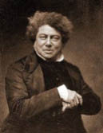

(1802 – 1870)

Yazar Alexandre Dumas'nın hayatı, bir yandan borçlarını kapatmak için yeni kitaplar yazmak bir yandan da bir türlü vazgeçemediği sevgilileri yüzünden yeni borçlar almakla geçti! Esmer olan teni ile o zamanlar alay edenler oldu; ama "Üç Silahşörler", "Monte Christo Kontu", "Demir Maskeli Adam" romanlarını okuyan herkes sanatına hayran kaldı.
Alexandre Dumas (okunuşu: Aleksandır Düma) 24 Temmuz 1802 günü Paris'in hemen dışında bulunan Viller-Cotterêts'te dünyaya geldi. "Romanın altın çağı" kabul edilen 19. yüzyılın en verimli ve en sevilen Fransız yazarlarından biri oldu. Annesi Marie Louies Labouret bir hancının kızı, babası Thomas Alexandre Davy Pailleterie ise Napoléon'un ordusunda generaldi. Yazarın babaannesi Haitiliydi. Oğlu Alexandre Dumas da babası gibi yazar olduğu için babasının adının sonuna "père" (baba) ve oğlun adının sonuna "fils" (oğul) yazılarak birbirlerinden ayrılırlar. Alexandre Dumas'nın ailesi babalarının ölümü üzerine maddi sıkıntıya düştü ve genç Alexandre bir süre Abbé Grégoire Okulu'na devam ettiyse de okumaya fazla istekli olmadığı için kısa süre sonra bir noterin yanında çalışmaya başlayarak iş hayatına atıldı.
Yazar önce oyunları, daha sonra da tarihsel romanlarıyla büyük ün kazandı. Özellikle Kardinal Richelieu dönemindeki gözüpek kahramanları anlattığı ve romantik tarzda yazdığı Üç Silahşörler (1844) ve Monte Kristo Kontu (1845) en tanınmış yapıtlarındandır. Dumas'nın renkli, açık yürekli, kimi zaman pek inandırıcı olmayan bir üslupla kendi olağanüstü yaşamındaki olayları aktardığı Anılarım (1852-55) adlı yapıtı, romantik dönem Fransız edebiyat yaşamına ışık tutar.
Dumas geçimini sağlamak amacıyla genç yaşta Paris'e gitti. Avukat olmayı planlamıştı ama geleceğin Fransa Kralı Orléans dükü Louis-Philippe'nin hizmetine girdi, sonra da şansını tiyatroda denemeye karar verdi. Yazdığı oyunlar oldukça ilgi gördü. Yazar III. Henry ve Sarayı (1829) adlı oyununda Fransız Rönesansı'nın gösterişli bir tablosunu çizdi. "Napoléon Bonaparte" (1831) ise yeni ölen imparatorun efsaneleşmesini sağladı. Oyunlarında Lord Byron'ın etkilerini görmek de mümkündür. Dumas, oyun yazarken tarihsel romanla da ilgilenmeye başladı ve renkli bir tarihsel fonla, genellikle 16. ve 17. yüzyılda geçen heyecanlı öyküler yazmayı hedefledi. Edebiyattaki kalıcılığını da oyunlarıyla değil bu tarihsel romanlarıyla sağladı.
Romanlarındaki kahramanlarda iyi-kötü ayrımı oldukça belirgindir. Victor Hugo gibi romantik akımın başlıca yazarlarındandır. İkisi de kendilerinden önce Fransız tiyatrosuna egemen olan neo-klasik anlayışı yıkmışlardır. Dumas başarı kazandıkça kendini pahalı zevklere vermiş ve borçlarını ödeyebilmek için daha fazla yazmaya başlamıştır. Sevgilisi ve kadın terzisi Marie Kaure Catherine Labay'den ileride yazar olacak olan oğlu Alexandre doğmuştur. 1840'ta oyuncu İda Ferrier ile evlenmesine rağmen çapkınlıktan vazgeçmeyen yazar başka kadınlarla ilişkilerini de sürdürmüş hatta onlardan çocuk sahibi olmuştur. Bu arada gazeteciliğe de başlamış, gezi kitapları da yazarak para kazanmaya çalışmış ama başarılı olamamıştır.
1832 yılındaki kolera salgınında hastalanan Dumas, doktorunun önerisi üzerine yolculuğa çıkmış ve Avusturya, Hollanda, İspanya, Britanya, Almanya ve Kuzey Afrika'yı kapsayan bir gezi yapmıştır. Yolculukları sırasında gezi notları tutmuş ve her birini ayrı bir kitap olarak yayımlamıştır.
Romanlarının başarısı üzerine kendisine Port Marly'de arazi alarak şimdilerde müze olan bir şato inşa ettirmiştir. Ancak şatosunu bir süre sonra satmak zorunda kalan yazar, alacaklılarından kurtulmak için 1851'de Brüksel'e kaçmak zorunda kalmıştır.
Alexandre Dumas 5 Aralık 1870'te, Dieppe'de, oğlunun evinde ölmüş ve Viller-Cotterêts'te toprağa verilmiştir. Daha sonra naaşı Fransız kültür ve sanat dünyasının en büyük adlarının gömülü olduğu Panthéon'a nakledilmiştir.
Başlıca Romanları: Üç Silahşörler (1844), Monte Christo Kontu (1846 – İthaki Yayınları, 2010), Siyah Lale (1850 – Müjde Yayınları, 2008)